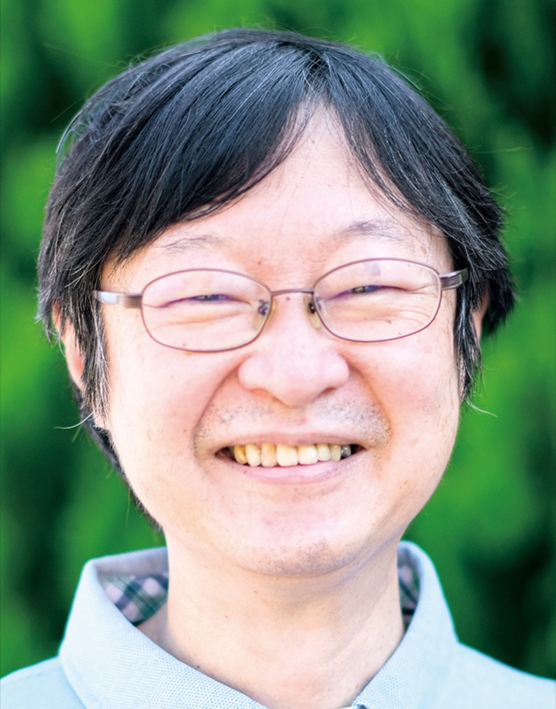

「日本の楽器はそれぞれの特徴をよく知らないと、作曲できない。
難しさがあるから好きです」
タウンニュース旭区・瀬谷区版「人物風土記」（2022年7月28日）より
秋岸寛久あきぎし ひろひさ ／ 作曲家・編曲家 日本音楽集団 団員
箏、尺八、三味線、琵琶。和楽器のための音楽を30年以上書きつづけている作曲家です。横浜・希望が丘で生まれ育ち、いまもこの町で暮らしています。
人となり
地域紙の人物紹介と、公式サイトのプロフィールから。
- いたずら書きの音符から
- 中学生のころ、いたずらで五線譜に書いた音符。それを見たピアノの先生が、作曲の先生を紹介してくれました。厳しい指導にも
負けたくない
と続け、音楽大学へ。タウンニュース（2022） - 箏は小学4年生から
- 近所でお箏を習いはじめました。大学では作曲を学びながら、邦楽演奏コースで箏と三絃も習っています。公式サイトのプロフィール
- ほぼ4日間の徹夜
- 卒業作品『三味線協奏曲』は、最後はほぼ4日間徹夜して書き上げました。のちに仙台フィル、日本フィルの定期演奏会で演奏されています。公式サイトのプロフィール
- 生粋の「希望が丘っ子」
- 幼稚園から高校まで、ずっと希望が丘。地域の役目も
断れない性格で
と笑います。タウンニュース（2022） - 作曲家目線の鑑賞講座
- 自宅の音楽教室で、CDやレコードをかけながら、作曲家の目線でクラシックの名曲を語る講座を開いています。熱が入るあまり、つい音量を下げて話してしまうことも。タウンニュース（2022）
作品と、ひとこと
作品に添えられた、作曲者自身のことばです。演奏の動画と試聴がある曲は、その場で聴けます。
全作品の目録を開く（件）
| 年 | 曲名 | 編成 | 委嘱 |
|---|
ご依頼
作曲・編曲、講座、楽譜のことは、メールでお気軽にご相談ください。
頼めること
- 合奏団の新曲・編曲
- 四重奏の歌謡曲メドレーから大合奏まで。編成と弾き手に合わせて書きます。
- 舞台・劇の音楽
- 歌舞伎、音楽劇、和楽劇。スーパー歌舞伎『もののけ姫』では編曲を担当しました。
- 講座・お話
- 作曲家の目線で、名曲の聴きどころを紹介する鑑賞講座。
- 作曲・編曲のレッスン
- 横浜の秋岸音楽教室で教えています。
ご依頼の流れ
- メールでご相談
- お返事と打ち合わせ（編成・長さ・時期）
- お見積もり
- 作曲・編曲
- 楽譜のお渡し。リハーサルにも伺います
メールに書いていただきたいこと
- 団体名とご担当の方のお名前
- 楽器の編成と人数
- 演奏の予定日と会場
- 曲の長さの目安
- 弾き手の経験（初めての方が多い、など）
- 新しい曲か、編曲か（編曲なら元の曲）
※流れと項目は見本の文面です。ご本人と決めてから掲載します。
楽譜の手に入れ方
- 大日本家庭音楽会
- 『時のマドンナ』『SAKURAパラフレーズ』『童謡ファンタジー』『邦楽器のためのコンポジション』などの縦譜
- 日本音楽集団
- 『邦楽器のためのコンポジション』『邦楽器のためのインプロヴィゼーション』の楽譜とCD
- そのほかの作品
- メールでご相談ください。
チラシ・プログラム用のプロフィール
短い版
秋岸寛久（あきぎし ひろひさ）作曲家。横浜生まれ。東京音楽大学作曲科卒業、同研究科修了。日本音楽集団団員。邦楽器のための作品を数多く手がけ、2026年にはスーパー歌舞伎『もののけ姫』の編曲を担当。
長い版
秋岸寛久（あきぎし ひろひさ）作曲家。横浜生まれ。中学時代より助川敏弥に作曲を学び、横浜市生徒作曲コンクール最優秀賞。東京音楽大学作曲科で浦田健次郎、三木稔に師事し、邦楽演奏コースで箏を野坂惠子、滝田美智子、三絃を坂井敏子に学ぶ。卒業作品『三味線協奏曲』は仙台フィルハーモニー管弦楽団、日本フィルハーモニー交響楽団の定期演奏会などで演奏された。同大学研究科修了後、日本音楽集団に入団。日本大学芸術学部講師を10年間務める。主な作品に『森羅万象』『トポロジカルスペース』シリーズ、薩摩琵琶とオーケストラ・アジアのための『祇園精舎』など。スーパー歌舞伎『オオクニヌシ』の音楽、『もののけ姫』の編曲を担当。日本音楽集団団員。
※ご本人の確認後に掲載します。
akg01248@gmail.comメールを書く